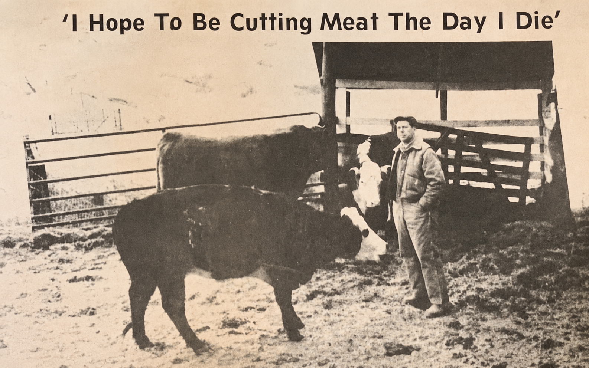

Hurricane, West Virginia · Since 1973
Joe's
Farm Meat
Market
A good butcher shop on Hurricane Creek Road.

— Joe Leadmon
Joe Leadmon is a master butcher. He has raised cattle and cut meat his whole life, and he has been doing so right here since 1973.
We sell anything
Beef or Pork.
If it's beef or pork, Joe has it — and he'll cut it to your order.
Where to find us
813 Hurricane Creek RdHurricane, WV 25526 Get directions →
Best way to reach the shop — give us a call
(304) 562-6291
For a custom processing question or special order, please give the shop a call.
When we're open
- Monday
- 8 – 5
- Tuesday
- 8 – 5
- Wednesday
- 8 – 5
- Thursday
- 8 – 4
- Friday
- 8 – 5
- Saturday
- closed
- Sunday
- closed
Note: We close an hour early on Thursdays, at 4 — that's our day to pick up from the slaughterhouse.